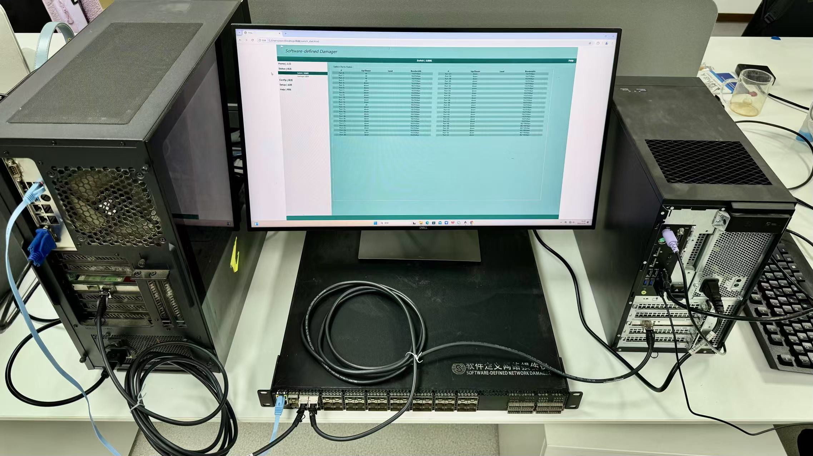

谭立状 (Lizhuang Tan)
谭立状 (Lizhuang Tan)
博士，副研究员，硕士生导师
算力互联网与信息安全教育部重点实验室，山东省算力互联网与服务计算重点实验室（原山东省计算机网络重点实验室），
tanlzh@sdas.org 或 lzhtan@qlu.edu.cn
2022年7月至今，我在山东省计算中心（国家超级计算济南中心）算网融合研究团队工作，从事超算互联网/山东算网相关研究工作。2024年10月至2025年9月，我在浦项科技大学洪元基（James Won-Ki Hong）教授实验室访问学习，从事网络智能平面研究工作。2021年4月至2022年6月，我在字节跳动高速网络团队担任研发实习生，在江卓博士指导下从事RDMA/RoCE研发工作。
2022年6月，我从北京交通大学电子信息工程学院移动专用网络国家工程研究中心（原下一代互联网互联设备国家工程实验室）在苏伟教授指导下获得信息与通信工程专业工学博士学位。2017年6月，我从山东师范大学信息科学与工程学院获得通信工程专业工学学士学位，同时获得法学学士学位。
我的研究方向是网络测量、测试与管控，主要技术对象包括软件定义网络和数据（智算）中心网络：
提出基于SRv6的主动网络遥测架构及其实现策略（中国信息通信大会第二届互联网体系结构学术会议，2019），将段路由标签栈以IPv6扩展报头的形式耦合到自定义探针中，使用改进广度优先搜索算法对遥测指令和遥测路径进行灵活编排，是领域内较早将SRv6和INT融合的研究方案； 围绕提高遥测新鲜度和减小遥测入侵性两个系统目标，提出基于多目标优化遥测承载流选取方法（PCT专利202010609191.7，2020；APNOMS，2021）和混合型带内网络遥测任务编排算法（APNOMS，2022），研发并开源基于非支配排序遗传算法的编排求解器； 发表带内网络遥测研究综述（Computer Networks，2021），系统概述带内网络遥测关键实现技术、优化手段和应用部署情况，获评济南市网信领域基础理论研究和技术创新应用论文二等奖；提出基于染色标记的丢包检测及定位机制（IEEE Networking Letters，2021）和多路径场景下丢包检测及定位方案（Internet Technology Letters，2022），被带内网络遥测参考标准规范采纳； 发现带内网络遥测信息随流缺失问题，提出带内网络遥测质量诊断及缺失数据恢复算法（IEEE Transactions on Network and Service Management，2021）； 参与设计字节跳动主机内延迟监测及故障诊断系统Hostping（NSDI，2023），原型成果已应用于字节跳动数据中心网络监测系统。

研制软件定义网络损伤仪原型设备（发明专利ZL202320329297.0，ZL202310224941.2，2023）， 基于硬件可编程交换机进行相应网络损伤逻辑设计，包括（1）意图驱动的网络损伤配置（发明专利ZL2023117778457.0，2023）、(2）串并行组合的损伤功能部署（HPCC，2024）和（3）CPU-Tofino协同的精细损伤实现，满足网络损伤模拟的功能和性能需求，提高网络损伤模拟的可定义性，有效降低进行网络测试实验的成本和开销。

网络管理：提出基于偏好排序和双边匹配的数据中心流量调度方法，建模考虑偏好排序的路径-流匹配问题，提出同时考虑匹配结果的稳定性和最优性的双边匹配求解算法（Transactions on Emerging Telecommunications Technologies封面论文，2022）；
设计基于知识定义网络和边缘数据分布的混合云端到端延迟预测算法（NaNA，2019），提出服务功能链聚合映射算法，将功能链映射建模为混合整数线性规划问题，所提算法显著减少成本和延迟（Journal of Network and Computer Applications，2024）；
提出无损网络水线自动化调优机制ByteTuning（IEEE Transactions on Cloud Computing，2024），支持交换机和网卡的全链路RoCEv2网络性能调优，通过最小化端口覆盖集、数据聚合和配置语言转译等方式简化搜索空间并提高调优搜索效率，原型成果已应用于字节跳动数据中心网络系统。
网络传输：提出数据中心网络QUIC传输协议方案DCQUIC（INFOCOM ICCN，2021），通过FPGA硬件卸载建连密钥协商过程，相较于DCTCP、DCUDP，DCQUIC在建连速度、传输效率、灵活性和可靠性上性能出色；
开源模块化QUIC协议开发原型（CoNEXT Poster，2020）及OpenQUIC项目，通过标准化拥塞控制、流量控制和加解密组件显著提高QUIC协议可扩展性和兼容性；
提出主动连接迁移机制（MobiQuitous，2020），将连接管理与网络垂直/水平切换分离，基于多臂老虎机探索利用网络链路质量，利用冗余接入和自适应迁移提升传输可靠性和性能，并提交IETF草案；
提出多路径传输场景下MPDTP块调度机制（NaNA Best Paper Award，2021），结合多路径延迟、吞吐和块截止时间特性，有效提升传输效率；
研制完成基于BMv2软件交换机的异步流量整形原型系统（APNOMS，2023），包括工作组件、工作线程和整形参数配置的实现，在单优先级和多优先级两种场景下实际排队时延均低于理论时延边界。
国家标准《智能计算 超算互联网 组网技术要求》获批立项。
入选山东省计算中心（国家超级计算济南中心）齐鲁青创学者。
《网络操作系统SONiC: 原理、技术与实践》出版上市。

ByteTuning被《IEEE Transactions on Cloud Computing》录用。
《高速数据中心网络的缓存管控方法研究》获得国家自然科学基金青年项目资助。
《山东省网信领域新质生产力产业现状研究》项目获得山东省网信领域软科学重点课题资助。
成为硕士研究生导师，可以招收计算机科学与技术（学术型）和电子信息（计算机技术，专业型）两个方向的研究生，欢迎报考。
《网络遥测进展研究》获得2023年济南市网信领域基础理论研究和技术创新应用论文二等奖。
基于P4的软件定义网络损伤仪研制完成，欢迎洽谈采购。
《带内网络遥测任务编排算法研究》项目获得山东省自然科学基金资助。
LossSight获第二十五届中国机器人及人工智能大赛国家二等奖。
我们将于2023年8月在青岛举办NaNA'23学术会议，欢迎网络方向赐稿。
《面向数据中心的基于FPGA的网络卸载研究》项目获得山东省自然科学基金资助。
Path-Flow Matching被《Wiley Transactions on Emerging Telecommunications Technologies》选为 FEATURED COVER。
参加中国算力大会并做《 汇聚海量数据，超算行业未来》报告。
获得博士学位，感谢恩师苏伟教授。